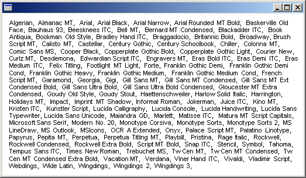

The InstalledFontCollection class inherits from the FontCollection abstract base class. You can use an InstalledFontCollection object to enumerate the fonts installed on the computer. The FontCollection::GetFamilies method of an InstalledFontCollection object returns an array of FontFamily objects. Before you call FontCollection::GetFamilies, you must allocate a buffer large enough to hold that array. To determine the size of the required buffer, call the FontCollection::GetFamilyCount method and multiply the return value by sizeof(FontFamily).
The following example lists the names of all the font families installed on the computer. The code retrieves the font family names by calling the FontFamily::GetFamilyName method of each FontFamily object in the array returned by FontCollection::GetFamilies. As the family names are retrieved, they are concatenated to form a comma-separated list. Then the DrawString method of the Graphics class draws the comma-separated list in a rectangle.
FontFamily fontFamily(L"Arial");
Font font(&fontFamily, 8, FontStyleRegular, UnitPoint);
RectF rectF(10.0f, 10.0f, 500.0f, 500.0f);
SolidBrush solidBrush(Color(255, 0, 0, 0));
INT count = 0;
INT found = 0;
WCHAR familyName[LF_FACESIZE]; // enough space for one family name
WCHAR* familyList = NULL;
FontFamily* pFontFamily = NULL;
InstalledFontCollection installedFontCollection;
// How many font families are installed?
count = installedFontCollection.GetFamilyCount();
// Allocate a buffer to hold the array of FontFamily
// objects returned by GetFamilies.
pFontFamily = new FontFamily[count];
// Get the array of FontFamily objects.
installedFontCollection.GetFamilies(count, pFontFamily, &found);
// The loop below creates a large string that is a comma-separated
// list of all font family names.
// Allocate a buffer large enough to hold that string.
familyList = new WCHAR[count*(sizeof(familyName)+ 3)];
StringCchCopy(familyList, 1, L"");
for(INT j = 0; j < count; ++j)
{
pFontFamily[j].GetFamilyName(familyName);
StringCchCatW(familyList, count*(sizeof(familyName)+ 3), familyName);
StringCchCatW(familyList, count*(sizeof(familyName)+ 3), L", ");
}
// Draw the large string (list of all families) in a rectangle.
graphics.DrawString(
familyList, -1, &font, rectF, NULL, &solidBrush);
delete [] pFontFamily;
delete [] familyList;
The following illustration shows a possible output of the preceding code. If you run the code, the output might be different, depending on the fonts installed on your computer.

Â
Â